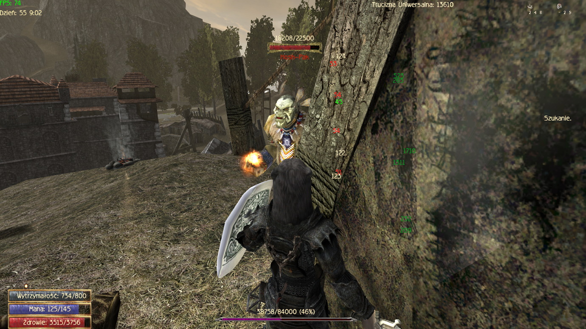
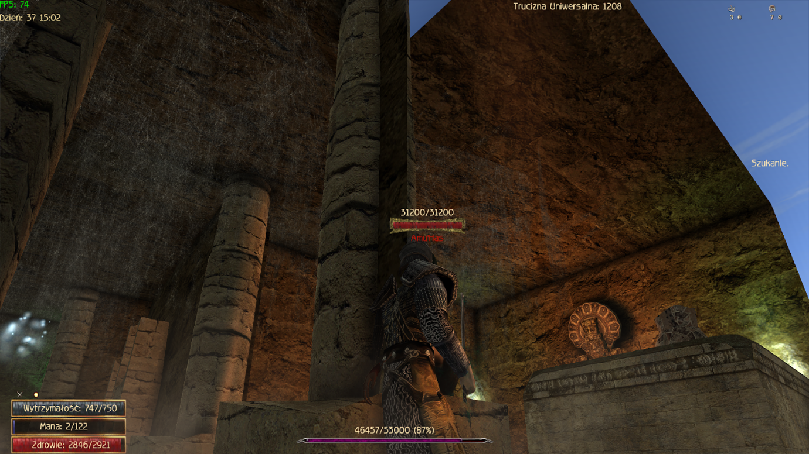
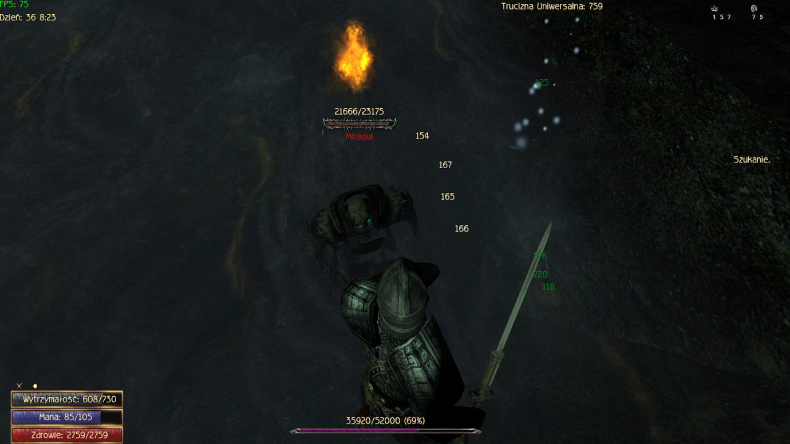

Spis Treści:
Jak naprawić kamerę nienadążającą za postacią (GRawInput)?
Po zainstalowaniu GRawInput czułość myszy zmieniamy w pliku GRawInput.ini używając zmiennych SpeedMultiplierX oraz SpeedMultiplierY.
Jest jednak możliwość, że przy użyciu przyśpieszenia czasu lub podczas latania jako krwiopijca, kamera przestanie za nami nadążąć i będzie się coraz bardziej oddalać od postaci. Aby to naprawić, należy zwiększyć czułość myszy w grze. Można to zrobić w ustawieniach lub w Gothic.ini . Przy ustawieniach mouseSensitivityX=10 / mouseSensitivityY=10 kamera działa normalnie.
Zombie Gomez się nie pojawił - co robić?
Zdarza się, że Zombie Gomez nie pojawia się w Zamku w Górniczej Dolinie. W takim wypadku pozostaje przyzwanie go kodami:
Wciskamy klawisz Pause Break na klawiaturze -> Piszemy marvin -> Escape -> F2 -> Insert none_104_gomez -> F3 (wyjście z trybu marvina)
Jak używać “zestawów” w New Balance?
W New Balance mamy dostępne cztery customowe zestawy wyposażenia. Aby ich użyć, należy wcisnąć klawisz P i wcisnąć klawisz na samym dole menu - pojawią
się wtedy cztery przyciski od zestawów. W tym miejscu możemy zmieniać wcześniej ustawione zestawy ekwipunku.
Aby ustawić sobie zestaw ekwipunku, należy otworzyć ekwipunek, nacisnąć klawiszC odpowiednią ilość razy (raz = 1 zestaw, dwa razy = 2 zestaw),
wybrać pożądany przedmiot (na przykład Starożytny Amulet Kapłanów) i wcisnąć klawisz 1 - w tym momencie na ekranie pojawia się informacja o przypisaniu przedmiotu.
Następnie zaznaczamy dwa Starożytne Pierścienie Kapłanów i na jednym wciskamy klawisz 1 , a na drugim klawisz 2 (pierścienie są dwa, więc używamy przy nich dwóch przycisków,
dwóch slotów). W celu zakończenia przypisywania ekwipunku, klikamy klawisz C , aż cztery rzędy na środku ekranu znikną.
Gratulacje! Teraz masz możliwość ekspresowego wyekwipowania Setu Kapłanów dającego regenerację many! Wprost stworzone do przenoszenia się między lokacjami we wczesnej fazie gry!
Jaki poziom trudności wybrać?
W New Balance dostępne są dwa poziomy trudności:
- Gothic - domyślny poziom trudności, dostosowany do nowych graczy nieznających gry. Można dowolnie edytować różne aspekty poziomu przy pomocy suwaków w grze, rzecz jasna tylko przed startem gry. Po rozpoczęciu rozgrywki ustawienia są permanentne.
- Nightmare - znacznie trudniejszy poziom z wieloma utrudnieniami i najtrudniejszymi możliwymi ustawieniami.
Cechy poziomu Nightmare względem poziomu Gothic:
- Mniejsza ilość Punktów Nauki na poziom (spada stopniowo od 10 Punktów na poziom do 5 Punktów na poziom, zależne od poziomu postaci)
- Niższe startowe statystyki postaci
- Brak zdrowia za poziom
- Niższe ceny sprzedaży trofeów/kosztowności/przedmiotów dla Mistrzów jako czeladnik w specjalnym handlu (skupowanie)
- Brak wielu opcji eskorty przez NPC (Lares, Bartok, Piraci w Kanionie)
Gdzie można zapisywać na poziomie trudności Nightmare?
Oprócz niżej wymienionych miejsc, grę można zapisywać przy wejściu lub na początku danej lokacji/jaskini, do której przy wejściu zmienia się zen (np. Jaskinia Bólu, Stara kopalnia)
KHORINIS
- Wieża Xardasa
- Południowa brama Khorinis (Po rozmowie z Lotharem)
- Koszary (Tylko Strażnik Miejski)
- Martwa Harpia (Po dołączeniu do Wodnego Kręgu)
- Kuchnia na farmie Onara (Po przyniesieniu paczki Sagitty)
- Jaskinia Sagitty (Po zrobieniu questa z cieniostworem od Ignaza)
- Przed przejściem do Jarkendaru
- W pomieszczeniu gdzie jest Cassia w kanałach Gildii Złodziei (Trzeba mieć 10 reputacji u Złodziei)
- W obozie Dextera (od 3 rozdziału - gdy posiadłość będzie już nasza)
- Jaskinia Fregyala
- U Constantina w pracowni (tylko gdy jesteśmy u niego czeladnikiem)
JARKENDAR
- Przy Magach Wody
- Obok chaty Grega, przy ognisku
- Przy Snafie w Obozie bandytów
DOLINA ASHTARA
- Przy teleporcie na początku lokacji
GÓRNICZA DOLINA
- Przy wejściu do jaskini, która prowadzi do Khorinis
- W zamku, tam gdzie Milten
- Przed wejściami do jaskiń (np. Stara Kopalnia, Jaskinia Bólu)
- Przy kamieniu teleportacyjnym przed Obozem Bractwa
MIASTO ORKÓW
- Na początku lokacji
- W centrum miasta
- Przy Ur-Thrallu
PUSTYNIA ADANOSA
- Na początku lokacji
- Po wyjściu z jaskini, przy ognisku
- Przed niewidzialnym mostem
ŚWIĄTYNIA ŁEZ
- Na początku lokacji
- W świątyni, w pomieszczeniu przed pokojem z kratami
LAS ASASYNÓW
- Na początku lokacji
- Przy ognisku gdzie siedzi Gonzales
- Po walce z Haniarem, przed mostem na którym jest demon
KOPALNIA ORKÓW
- Na początku lokacji
- Przy windzie(na górze i na dole)
- Przy dowódcy
ŚWIĄTYNIA ŚNIĄCEGO
- Na początku lokacji
- W pomieszczeniu gdzie walczymy z magiem, gdzie jest przełącznik (Po bossie widmie)
- Przy Karrypto
- Przed Hoshkarem
- Po rozmowie z Hoshkarem, na arenie
DOLINA CIENI
- Na początku lokacji (obok teleportu)
- W jaskini ludzi
- Przed wejściem do Miasta Umarłych
MIASTO UMARŁYCH
KOSZMAR KRUKA
- Na początku lokacji
- W miejscu gdzie stoi duch po walce z pierwszym bossem
- W miejscach walk z bossami
- Przed duchami, które dają nam zagadki
ZAGINIONY BRAT
- Na początku lokacji
- W miejscu walk z bossami
DWÓR IRDORATH
- Na statku
- Przed mostem, za pierwszym smokiem (nie trzeba go zabijać, aby móc zapisać)
- Na początku jaskini gdzie jest Smok Ożywieniec
- Przed Smokiem Ożywieńcem
Jak zwiększyć obrażenia w walce w zwarciu?
Modyfikacja New Balance zmieniła delikatnie sposób obliczania zadawanych obrażeń. Na nasze obrażenia, oprócz siły lub zręczności, w zależności od dzierżonej broni, wpływa również procent w walce bronią oraz nasza wytrzymałość. Warto w tym miejscu dodać, że bronie skalują się ze statystyką, której wymagają do noszenia.
We wczesnej fazie gry, jeśli zamierzamy walczyć w zwarciu, warto jest zainwestować 20 Punktów Nauki w naukę Wytrzymałości. Dlaczego akurat 20? Ponieważ po wydaniu 20 punktów zwiększy się próg i za 1 punkt wytrzymałości będziemy musieli płacić 2 Punkty Nauki. Uczymy się, dopóki współczynnik nauki wynosi 1:1.
Warto przy tym zaznaczyć, że 1 wyuczony punkt wytrzymałości to tak naprawdę 10 jednostek wytrzymałości w grze. Maksymalny poziom wytrzymałości, jaki możemy mieć, to 1000 jednostek.
Bronie wymagające siły do użycia mają obrażenia zwiększone przez współczynnik siły. Dotyczy to zarówno mieczy jedno- i dwuręcznych, jak i kusz.
Analogicznie, bronie wymagające zręczności skalują swoje obrażenia ze zręcznością. Dotyczy to szpad, włóczni oraz łuków.
Wytrzymałość dodaje stałą ilość obrażeń podczas walki w zwarciu, co na początku rozgrywki robi kolosalną różnicę.
We wczesnej fazie gry, walcząc bronią jednoręczną, warto jest również wyciągnąć pochodnię; trzymana w lewej ręce zwiększa nam dosyć znacząco obrażenia, a także daje szansę na podpalenie przeciwnika. Pochodnię możemy wyciągnąć klawiszem Num 6 lub używając menu pod klawiszem P.
Jak poprawnie grać magiem?
Najważniejszymi atrybutami dla maga są mana i inteligencja: Mana jest zasobem pozwalającym na rzucanie zaklęć, a inteligencja jest statystyką zwiększającą obrażenia zaklęć (dokładne skalowanie poszczególnych gildii w Spisie)
Aby zostać magiem należy posiadać 40 inteligencji oraz 80 many (wymagania nie dotyczą zostania nowicjuszem).
Po zostaniu magiem warto jak najszybciej przejść do drugiego rozdziału w celu nauczenia się pasywnej regeneracji many od Vatrasa. Regeneracja = 1% maksymalnej many na sekundę zaokrąglony w dół (1 na 100 many). Dodatkowy 1 punkt na sekundę można uzyskać nosząc zestaw biżuterii Kapłanów z Jarkendaru (który każdy mag nosi aż do czwartego rozdziału), a także, za 200 sztuk złota, można uzyskać czasowe błogosławieństwo od Vatrasa zwiększające regenerację many.
Wymagania Many do nauki Kręgów Magii:
- 1 krąg → 1 rozdział bez wymagań
- 2 krąg → 200 many 1 rozdział lub 2 rozdział bez wymagań
- 3 krąg → 400 many 2 rozdział lub 3 rozdział bez wymagań
- 4 krąg → 600 many 3 rozdział lub 4 rozdział bez wymagań
- 5 krąg → 900 many 4 rozdział lub 5 rozdział bez wymagań
- 6 krąg → 1200 many 4 rozdział lub 6 rozdział bez wymagań
Jak zdobywać Inteligencję?
Inteligencję można zdobyć na kilka sposobów:
- Czytając książki i pulpity
- Ucząc się nowych czarów u Gallahada i nauczycieli gildyjnych
- Ucząc się pisania zwojów u Gallahada (kosztuje tylko złoto)
- Tworząc Eliksiry Umysłu z głów Polnych Pełzaczy (przepis sprzedaje Cronos w Jarkendarze)
- Używając alchemii (10 na rozdział)
- Tworząc kamienie runiczne (10 na rozdział)
- Ciastka miodowe (uczy Thekla)
- Dary od bogów
Jak zdobywać Manę?
- Piwo Coragona za zadanie Klienci Coragona
- Piwo Coragona w jego piwnicy (klucz znajduje się w skrzyni za ladą)
- Pierścień leżący przy wieży obok Rannego Orka, niedaleko Nicklasa
- Pierścień za zadanie Zarzuty Parlana
- Piwo Coragona za oddanie mu jego sreber
- Ciastka grzybowe(nieopłacalne, tworzymy miodowe)
- Dary od bogów (nieopłacalne, inteligencja ważniejsza)
- Gulasz grzybowy (uczy Snaf)
Jak zdobywać Moc Magiczną?
- Nauka dowolnej runy → +1%
- Specjalne dary od bogów
Kto uczy eliksiru
- Życia, Siły oraz Leczniczego - Constantino (po zostaniu czeladnikiem albo wykonaniu zadania Pierwsza Mikstura)
- Ducha, Zręczności oraz Many - Sagitta (po przyniesieniu jej Słonecznego Aloesu)
Przydatne zwoje na początku gry
Przemiana w krwiopijcę
- Na cmentarzu obok Khorinis, na posągu Innosa
Otwieranie zamków
- Na komodzie w domu Matteo
- W chacie Gallahada
- Na posągu Innosa niedaleko cmentarza przy Martwej Harpii
- W jaskini z goblinami za Farmą Onara
- W skrzyni w jaskini z teleportem obok rynku Khorinis
- W skrzyni Ur-Azoga (tylko pierwszy rozdział)
- W skrzyni Joriana
- W skrzyni Vatrasa
- W skrzyni Rączki w Kanałach (2 sztuki)
- W “środkowej” skrzyni w Skarbcu w Klasztorze (2 sztuki)
Mała burza ognista
- Na wzniesieniu nad trzema kretoszczurami naprzeciwko posągu Innosa obok Farmy Lobarta
- Jaskinia z Widmem między Leżem Czarnego Trolla, a Słonecznym Kręgiem (tam, gdzie notatka z zadania Sekret Kapitana Straży)
- Jaskinia z Topielcami na nowych terenach za Farmą Onara (nad jeziorkiem przy Wściekłych Trollach, niedaleko kwatery Łowców Demonów)
- W zrujnowanej wieży na nowych terenach za Farmą Onara (niedaleko kwatery Mrocznych Rycerzy)
- Na skałce nad Isgarothem
- W skrzyni w domu Gallahada (140 siły do otwarcia)
- W skrzyni Baal Tyona (60 siły do otwarcia)
Duża kula ognia
- W skrzyni w rogu pomieszczenia po prawej stronie patrząc na Cassię (Kanały)
- W skrzyni obok łóżka Pyrokara
- W regale w Bibliotece w Klasztorze Magów Ognia
Deszcz ognia
- Na dachu małej piramidy na Wykopaliskach Magów Wody
- W skrzyni na szczycie wieży w Twierdzy Joriana przy wieży z Necronomiconem
- W skrzyni Ahirona
Zmniejszenie potwora
- Od Ignaza za zadanie Człowiek pod obliczem bestii
- W magazynie piratów w Jarkendarze (po zadaniu Gorzałka Bartholomewa)
- Od Oddlera w Śnieżnych Górach Orków za przyniesienie mu narzędzi
- W skarbcu Opata w Koszmarze Kruka
Których Bandytów z Jarkendaru pozostawić przy życiu?
W czwartym rozdziale bandyci w Jarkendarze zostają zabici z powodów fabularnych. Każdy zabity bandyta daje +1 karmy Innosa i Beliara, dlatego warto ich zabić, zanim sami zginą. Zabijamy wszystkich bandytów w obozie, imiennych lub nie, poza wymienionymi poniżej:
- Snaf
- Fisk
- Tom
- Thorus
- Miguel
- Scatty
- Kinzharts (po dialogu z zadania Bezgraniczna potęga można go zabić)
Kto uczy…
- Kompotów (+max HP) - Cliff w Zamku w Górniczej Dolinie
- Potrawek (wielorazowe zupy) - Snaf w Jarkendarze
- Zup (jednorazowy bonus po zjedzeniu określonej liczby) - Edda w porcie
Skąd zdobyć czarną mgłę?
- Za zadanie Jedzenie dla Gallahada (30 sekund)
- Wypada z Lucjana, pierwsze zadanie od Opiekunów (30 sekund)
- W skrzyni Dextera (3 minuty)
- Po zakończeniu zadania Człowiek z pierścieniem (3 minuty)
- Po oddaniu Falkowi trofeum z Ishi’Kurata (3 minuty)
Jak wejść do miasta?
Są 3 sposoby na wejście do miasta:
- Glejt od Canthara (nieopłacalne)
- Zioła dla Constantina (+1 retoryki, wymagana rozmowa z Lesterem w kotlince przy Wieży Xardasa)
- Wejście od strony morza i rozmowa z Laresem (+1 zręczności, +500 doświadczenia)
Najbardziej opłacalną opcją jest wejście od strony morza, rozmowa z Laresem, a następnie ominięcie Lothara, wyskoczenie za mury miejskie i wejście sposobem Lestera (wymagana rozmowa z Lesterem). Tym sposobem zdobywamy bonus do zręczności, doświadczenie, a także retorykę bardzo potrzebną we wczesnej fazie gry. Po więcej informacji na temat retoryki zapraszam do punktu Jak zdobywać retorykę?
Jak zostać obywatelem?
Należy zdobyć dowolne ubranie obywatela oraz wykonać zadanie Droga na szczyt (zadanie w pełni opisane w Solucji).
Jak zdobyć ubranie?
- Kupić od Hanny Strój Obywatela za 100 sztuk złota
- Ukraść ubranie ze skrzyni w magazynku obok domu Matteo (skrzynie są zamknięte)
- Zdobyć Luksusowe Ubranie Obywatela w Górnym Mieście (najlepsza opcja)
Przed wycieczką do Górnego Miasta zalecane jest przyjęcie zadania Zadanie Gallahada; Gallahad znajduje się w swoim domu między domem Lehmara, a straganem Feni w dzielnicy portowej.
Luksusowe Ubranie Obywatela
Luksusowe Ubranie Obywatela możemy zdobyć w Górnym Mieście Khorinis. Dostać się do niego możemy po opuszczonym straganie między Placem Targowym, a Kaplicą Vatrasa. Przed zostaniem obywatelem po Górnym Mieście możemy chodzić TYLKO w godzinach 22-6!!!
Po godzinie 22 wspinamy się na stragan, a następnie na balkon nad nim. Po wspięciu się należy biec przez chwilę w kierunku barierki i próbować skoczyć; inaczej barierka nas “wypchnie” i spadniemy na stragan.
Teraz idziemy na teren naprzeciwko Ratusza, wskakujemy do fontanny na kilka sekund (bonusowe doświadczenie), a następnie wskakujemy na dach kwater paladynów - stojąc w fontannie, patrząc na Lothara, odpowiedni budynek będzie po naszej lewej stronie pod kątem 90 stopni. Wskoczyć można na pojedynczą skrzynkę przed budynkiem, a następnie na daszek nad nią - stamtąd będziemy mogli wejść na samą górę dachu, a kawałek przed nami będzie leżeć Luksusowy Strój Obywatela oraz, na daszku na lewo od niego, Skórzany Mieszek.
Przed opuszczeniem Górnego Miasta zalecane jest porozmawianie z NPC związanymi z Zadaniem Gallahada!
Kiedy Larius i Gallahad wychodzą na ławkę przed Ratuszem?
- Larius: 12-14
- Gallahad: 14-16 (Po zadaniu Zadanie Gallahada)
Jakiego mistrza wybrać?
- Harad - Nigdy, nie ma żadnych profitów.
- Bosper - Gdy gramy pod łuk, będziemy mogli się wtedy nauczyć wytwarzania kerenowych strzał.
- Constantino - Zostajemy jego czeladnikiem na każdej postaci za wyjątkiem łucznika ze względu na następujące profity:
- Jako jedyny w grze skupuje żuwaczki, żądła oraz skrzydła
- Jako jedyny w grze skupuje rośliny zwykłe oraz stałe (nieużywane marnują się w ekwipunku)
- Jako jedyny w grze skupuje eliksiry stałe (sprzedajemy mu niepotrzebne naszej postaci)
- Jako jedyny z mistrzów oferuje bonusowy Punkt Nauki (Należy sprzedać mu 20 ciemnych grzybów w specjalnym handlu i zapytać, dlaczego grzyby są ważne)
Jak zdobywać retorykę?
Retoryka jest nową statystyką, która pozwala na poprowadzenie dialogów w niektórych zadaniach w sposób niedostępny bez retoryki. Retoryka ma analogiczne działanie do perswazji z innych gier RPG. Maksymalny poziom retoryki możliwy do zdobycia to 100.
Retorykę można zdobyć na trzy sposoby:
- Czytając książki i pulpity
- Używając retoryki w dialogu
- Po 15 udanych próbach “wyłgania się” po nieudanej kradzieży kieszonkowej
Arkusz z książkami dającymi retorykę oraz z dialogami jej wymagającymi znajduje się w Spisie
Progi retoryki we wczesnej fazie gry
Poniżej znajduje się kilka dialogów we wczesnej fazie gry, które wymagają określonej ilości retoryki. Kursywą napisane są nazwy zadań dostępnych w solucji.
- Lehmar - 10 (Pożyczenie 1000 sztuk złota, nie trzeba oddawać)
- Parlan - 10 (Po wejściu do Klasztoru Magów Ognia bez klucza, na przykład po dachu)
- Cassia - 15 (Magiczny dziennik Vatrasa)
- Ramirez - 20 (Magiczny dziennik Vatrasa)
- Bromor - 20 (Facet bez dziury chodzi ponury)
Jak nauczyć się wydobycia i przetapiania rudy?
Najpierw należy nauczyć się kucia podstawowego miecza - możemy się tego nauczyć od kowala Carla w dzielnicy portowej. Następnie należy udać się do Harada i zapytać “Skąd bierzesz stal?”. Harad wyśle nas po tym do portowej tawerny, gdzie spotykamy Węża, który może nas nauczyć przetapiania rudy. Gdy zapytamy go o naukę wydobycia, ten wyśle nas do Snipesa na Farmę Lobarta (Snipes pojawi się po wzięciu zadania Torba pełna rudy od Węża).
Nauka biżuterii
Aby nauczyć się biżuterii, należy w pierwszym rozdziale gry zapytać Matteo, co zostało mu skradzione. W drugim rozdziale, po zadaniu Prezent dla Hanny, otrzymamy mieszek z kluczem do Skarbu Złodziei na wysepce niedaleko Przeklętej Latarni.
Po przeszukaniu skrzyń udajemy się do Matteo i oddajemy mu jego sprzęt do tworzenia biżuterii, za co zaoferuje nam on nagrodę do wyboru. Nauka biżuterii jest najlepszą nagrodą, jako że wytworzone przez nas amulety i pierścienie należą do najlepszych w grze.
Nauka otwierania zamków
W New Balance otwieranie zamków działa trochę inaczej niż w podstawowej wersji gry i dzieli się na trzy „ścieżki”:
- Wyważanie zamków siłą - do nauki u Carla, uczymy się tylko grając pod siłę.
- Otwieranie zamków - uczymy się tylko grając pod zręczność. Nauczyciele: Ramirez (bez złota), Thorben (tylko dobre gildie). Zawsze uczymy się od Ramireza po dołączeniu do Gildii Złodziei, nauka u Thorbena jest nieopłacalna.
- Otwieranie zamków magią - uczymy się grając magiem/pod magię. Nauczycielem jest Gallahad po zadaniu Zadanie Gallahada. Nauka runy otwierania zamków wymaga pierwszego kręgu magii oraz 350 many grając gildią wojowniczą (opcja nauki nie pokaże się przed osiągnięciem progu, gildie magiczne nie mają wymogu many). Oznacza to, że grając Paladynem/Strażnikiem Świątynnym pod runy będziemy musieli nauczyć się od Gallahada 1. kręgu i posiadać 350 many, by nauczyć się Runy Otwierania Zamków.
Na każdej postaci uczymy się tylko jednego rodzaju otwierania, zależnie od naszego buildu. Zamki otwieramy klawiszem Y (siła i magia) lub Shift + Y (wytrychy, wymagane 100 zręczności)
Jak pokonać Kruka w Jarkendarze?
Aby pokonać Kruka w tym miejscu należy z nim porozmawiać, a po rozmowie zbić jego zdrowie do 50% - w tym momencie walka jest uznawana za wygraną.
Najprostszym sposobem jest użycie zwojów paladyńskich (Święta Strzała, Rozproszenie Mroku) oraz, jeśli to nie wystarczy, można użyć również Dużej Kuli Ognia lub innych czarów ofensywnych.
Czary paladyńskie są w regale w pokoju Wulfgara w Koszarach Straży Miejskiej, można je również kupić od Martina.
Duża Kula Ognia jest do zdobycia w wielu miejscach, co zostało opisane w punkcie Przydatne zwoje na początku gry
Gdzie jest czarna ruda?
- W skrzyni za kratami w kanałach
- W Kanionie w Jarkendarze, na kamieniu we wnęce wzdłuż lewej ściany
- W skrzyni Kapitana Drake’a
- Na “wysepce” z Kapitanem Thatchem
- W magazynie w Forcie Azgan (4 sztuki)
- Za zadanie Siła tradycji w Forcie Azgan
- W skrzyni pustynnych goblinów (zadanie Zaginiony totem goblinów)
- Za posągiem Beliara w Świątyni Masjafu (4 sztuki)
- Na pierwszym piętrze najwyższej wieży w Zamku w GD
- W skrzyni w Mieście Orków (tam gdzie szaman Hush-Nar, inna odnoga)
- (Dolina Cieni) W skrzyni na końcu prawej odnogi jaskini pod Słonecznym Kręgiem
- (Dolina Cieni) W jaskini między Słonecznym Kręgiem, a Czarnym Trollem (Tajemnica Kapitana Straży)
- (Dolina Cieni) Wypada z Izulga w Mieście Umarłych
- (Dolina Cieni) W jednej ze skrzyń w Mieście Umarłych
- (Dolina Cieni) W ukrytym pomieszczeniu w Mieście Umarłych
- Nagroda od Ur Thralla za zabicie Azgalora
- Nagroda za zadanie Wojna klanów w Lodowych Górach Orków
- Wypada z Arghulina w Koszmarze Kruka
- Wypada z Opata w Koszmarze Kruka
- W skrzyni w skarbcu Opata w Koszmarze Kruka (3 sztuki)
- W skrzyni Chel’Draka w Zaginionym Bracie(3 sztuki)
- W grobowcu przy Farmie Onara
- Sprzedaje Jora (piąty rozdział)
- W grobowcu Lorda Ulzara (piąty rozdział)
Jak łatwo pokonać bossa?
Mroczny Mentor
Przy odpowiednim ustawieniu możliwe jest bicie go przez regał z książkami stojący po jego lewej stronie.
Kapitan Thatch
Należy ustawić się jak na screenie, Thatch zablokuje się o kamienny budynek.
Hosh-Pak
Można go zablokować o ścianę namiotu.

Magnat Malbar
Należy uklęknąć przy skrzyni i pozostawić ją otwartą (Ctrl + Alt + F8), po czym wejść w róg za nią. Z tego miejsca można bić Malbara, a on nie będzie reagować.
Val’Zar/Shemron (Zatopiona Wieża Xardasa)
Można wejść w kolumnę i bić bossa bez ryzyka bycia uderzonym.
Nurog, Strażnik drzewa
Można go łatwo zablokować na drzewie, obok którego stoi. Z uwagi na jego rozmiary, można go bić z dużej odległości.
Amul Sah/Amul Rough
Można ich zablokować na palmie stojącej zaraz obok Świątyni Prawdy. Potrafią się “zresetować” raz na jakiś czas, strzelając przy tym magicznym pociskiem.
Gazkul
Można zablokować na ruinach. W lewym górnym rogu widać miejsce, w którym normalnie znajduje się boss.
Ishar’Arh, starożytny strażnik
Strażnik ornamentu z Placu Świątynnego. Zaraz obok strzeżonej przez niego skrzyni jest palma, o którą można go zablokować.
Sak’Shar, starożytny strażnik
Można go zablokować na kawałku budynku widocznym na screenie. Za plecami znajduje się oaza, po prawej stronie widać stado czarnych zębaczy znajdujących się nieopodal.
Amu’Has (Świątynia łez)
Można go bić wchodząc w róg ściany.

Meliaks (Świątynia łez)
Tak samo jak Amu’Has.
Starożytny strażnik (Stara Kopalnia)
Łatwy do zablokowania w jednej z rur rozsianych po dawnym gnieździe pełzaczy.
Ponury Żniwiarz (Jaskinia bólu)
Można go zablokować o kamień znajdujący się zaraz obok niego.
Miragul (Jaskinia bólu)
Blokuje się w wodzie.

Haniar Ślepy (Las Asasynów)
Do zablokowania na drzewie przed Świątynią Masjafu (Świątynia za postacią, wyjście do Gonzalesa przed postacią)
Hash-Nekron, Strażnik Wrót
Można go zablokować na filarze we wrotach. Na wprost znajduje się miejsce, w którym boss się pojawia.
Ihiyal, przeklęty mag
Można go zablokować na kamieniu przed jego jaskinią.
Niorret, Lord Cienia
Można go zablokować na trumnie (szeroki kąt, inaczej będzie miał zasięg)
Jak budować postać walczącą w zwarciu?
- Eliksir Życia
- Ciastka mięsne/rybne (zależnie od buildu)
- Eliksir Wytrzymałości
- Kompoty na HP
- Dary od bogów 3-4 razy w wytrzymałość, reszta w HP
- Wina na HP
- Zupy na odporność na magię
- Eliksir na odporność na ogień
Jak budować postać walczącą na dystans?
- 20 PN w Wytrzymałość (1:1)
- Eliksir Siły/Zręczności (zależnie od buildu)
- Ciastka mięsne/rybne (zależnie od buildu)
- Eliksir Wytrzymałości
- Kompoty na HP
- Dary od bogów 3-4 razy w wytrzymałość, reszta w siłę/zręczność
- Wina na HP
- Zupy na odporność na magię
- Eliksir na odporność na ogień
Jak budować postać magiczną
- Eliksir Ducha (Amun-Su w przypadku Maga Ognia)
- Ciastka miodowe
- Eliksir Wytrzymałości
- Eliksir Wytrzymałości
- Kompoty na HP
- Dary od bogów na inteligencję
- Wina na manę
- Zupy na manę
- Eliksir na odporność na ogień
Proponowana kolejność wykonywania lokacji w modzie:Proponowana kolejność wykonywania lokacji w modzie:
Khorinis --> Jarkendar --> Zachodnie Wybrzeże --> Górnicza Dolina (można wejść po Jarkendarze po runę przemiany w krwiopijcę i naukę kompotów) --> Pustynia Adanosa (zbieramy bonusy z mapy) --> Wątek orków (ile da radę) --> Bezgraniczna potęga!!! --> 4 rozdział --> Las Asasynów --> Bagno w GD --> Pustynia Adanosa --> Wątek Orków/Orkowa kopalnia --> Świątynia Śniącego --> Dolina Cieni --> Koszmar Kruka --> Zaginiony Brat --> Smoki
Co należy zrobić w pierwszym rozdziale?
Zadania i czynności do wykonania:
- Uleczenie Rannego Orka przy zniszczonej wieży obok myśliwego Niclasa zwojem od Salandrila
- Uratowanie Ragnara (Głodny Skazaniec), danie mu 100/1000 sztuk złota i nakarmienie go (1 smażone mięso i 1 butelka wody)
- Zadanie Nowa broń dla Skipa
- Zadanie Facet bez dziury chodzi ponury (trzeba je zakończyć przed wejściem do Jarkendaru, inaczej Sonja umrze)
- (Tylko jeśli nie zostajemy Szamanem) Zabicie orkowego szamana Ur Azoga w lesie niedaleko Bimbrowni Vino
- (Tylko jeśli chcemy zostać Magiem Ognia) Dołączenie do Gildii Zabójców (Mag Ognia jako jedyny nie może dołączyćdo Zabójców, należy to zrobić przed dołączeniem do gildii)
- Porozmawianie z Matteo, przegadanie wszystkich opcji dialogowych (jeśli nie zapyta się go o kradzież formy do pierścieni, to stracimy możliwość nauki jubilerstwabardzo ważnej umiejętności)
Wykonanie zadań na dołączenie do innych gildii:
- Pobicie Najemników z Wyzwania Jarvisa (Rod (na pięści = bonus exp), Fester, Raoul, Sentenza, Bullko, Sylvio) oraz wykonanie Próby Torlofa (zabicie strażników)
- Paczka Baala Oruna (wymagana Przepaska Nowicjusza od Lestera) - bierzemy paczkę od Baala Oruna, zanosimy Lariusowi, a paczkę od Lariusa otwieramy (+1000 złota, tylko jeśli nie dołączamy do Bractwa); po otwarciu paczki nie wolno rozmawiać z Baalem Orunem, będzie chciał nas zabić
- Szybsze dołączenie do Straży (zadanie od Martina, Lares nam o nim mówi)
Warunki wymagane do przejścia do drugiego rozdziału:
- Zdobycie ornamentów dla Magów Wody, rozmowa z Saturasem
- Dołączenie do Wodnego Kręgu
- Zabicie Dextera, przeczytanie notatki z jego ciała (Rozkazy) i rozmowa z Vatrasem
- Dołączenie do gildii głównej i rozmowa z Lordem Hagenem
Co należy zrobić w drugim rozdziale?
Zadania i czynności do wykonania:
- Horror na cmentarzu (można zabić Mrocznego Mentora, jeśli nie gramy jako Mroczny Rycerz)
- Złożenie Daronowi 5 razy po 200 sztuk złota dla stałych bonusów
- Nekromanta w Khorinis (tylko po daniu Daronowi 1000 sztuk złota w formie datków)
- Wyprowadzenie Diego i Bilgota z GD
- Zadanie Magiczne zbawienie od Brutusa (po zapłaceniu mu 200 sztuk złota “za naukę”)
Co należy zrobić w trzecim rozdziale?
- Rozpocząć zadanie Bezgraniczna potęga - rozmowa z Hokurnem na Farmie Onara
- Paczki z węglem dla Dobara (maksymalnie można oddać dwie z czterech w grze)
- Nauka przetapiania orkowych broni u Dobara
- Zakupić Szczaw Królewski od Miguela (trzeba zapytać “Co słychać?”, żeby się pojawił)
- Zadanie Obawy Sagitty (jeśli go nie wykonamy, to w następnym rozdziale będzie martwa)
- Zabić bandytę Grubego w Górniczej Dolinie (w obozowisku Aidana z Gothica 1, w IV rozdziale pojawiają się tam orkowie)
- Wykonanie zadania Serce królowej harpii dla Gestatha w celu nauczenia się wydobywania smoczej krwi za darmo (nie trzeba robić w trzecim rozdziale, należy to jednak wykonać PRZED ZABICIEM SMOKÓWSmocza krew jest wymagana do wytworzenia najlepszej biżuterii w grze w piątym rozdziale)
- Wybić bandytów w Jarkendarze (poza tymi wskazanymi w Których Bandytów z Jarkendaru pozostawić przy życiu?)
Po wykonaniu powyższych czynności zaleca się jak najszybsze przejście do rozdziału czwartego z uwagi na znacznie lepszą biżuterię i ekwipunek dostępny od owego rozdziału. Siedzenie w trzecim rozdziale jest zwyczajnie nieopłacalne.
Co należy zrobić w czwartym rozdziale?
- Porozmawiać z Xardasem podczas zadania Mądrość opiekunów; jeśli się tego nie zrobi, to Wątek Opiekunów zostanie zablokowany
Gdzie są trzy “Interesujące notatki”?
- Na szczycie wieży z Necronomiconem
- Na wodospadzie obok przełęczy do GD
- Na wodospadzie przy Klasztorze Magów Ognia